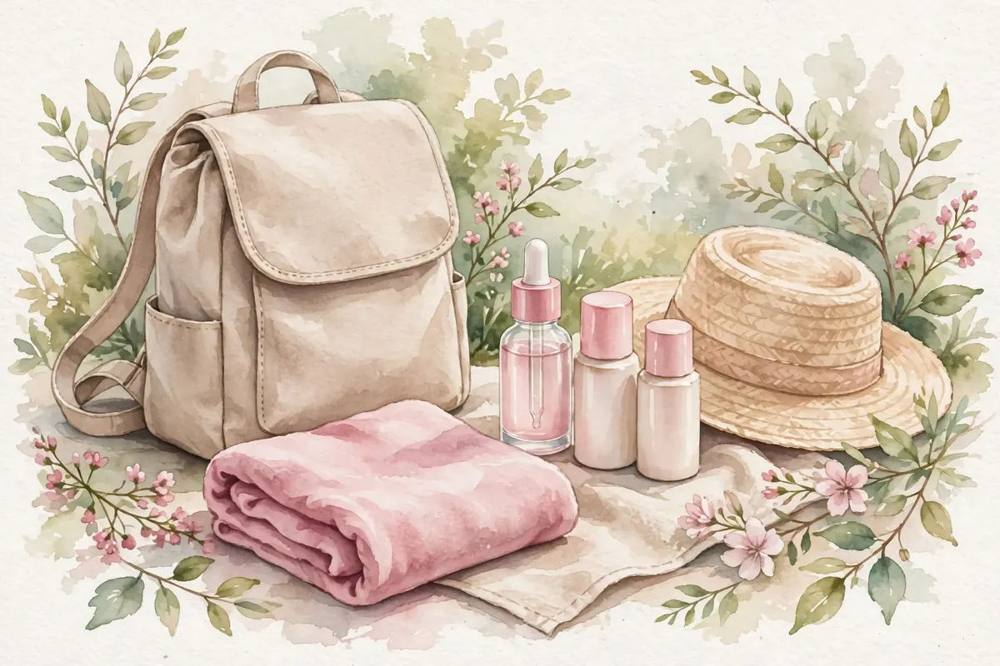

アウトドアの日の携帯ボディケア

山や海、キャンプなど、屋外で過ごす日は、日常とは違うケアの組み立てが必要になります。荷物に限りがある中で、何を持っていくか。この記事では、アウトドアの日の携帯ボディケアの絞り方と、帰宅後の段取りを整理します。野外では、水場の場所や天候など、自分で決められない条件も多いため、先に決めておく部分の価値が大きくなります。
持っていくものは「使う場面」から逆算する
携帯ケアは、場面の数だけ絞ります。出発前に塗るもの、日中に塗り直すもの、汗や水で体を拭うもの、帰りの車内で使うもの。場面を先に書き出すと、必要なアイテムの数が決まってきます。あれもこれもと増やすより、場面にひもづけて選ぶ方が、荷物も管理も軽くなります。
日焼け止めは、塗り直しが前提のアイテムです。小さいサイズを、取り出しやすい場所に入れておきます。塗り直しのタイミングは、休憩や食事の場面と結びつけておくと、忘れにくくなります。汗を拭いたあとは、塗り直しの合図にします。手を洗えない場面も想定して、拭うためのシート類も、場面のひとつとして数えておきます。虫よけなど他の野外アイテムとの使う順番も、パッケージの案内を確認して決めておきます。
荷物の中での保管と、漏れ対策
リュックやバッグの中では、容器のキャップが開いたり、中身が漏れたりすることがあります。ポンプ式はロックがかけられるものを選ぶ、液体ものは小分け容器に移して袋に入れる、といった対策をしておくと、他の荷物を汚さずに済みます。小分け容器には、中身が分かるようラベルを貼ります。
温度の面でも、荷物の置き場所に配慮します。炎天下の車内や、直射日光の当たる場所に荷物を置きっぱなしにしないことは、アイテムの保管条件を守るうえでも大切です。休憩中は、荷物を日陰に置くことも、保管の一部です。
帰宅後の段取りは、先に決めておく
屋外で過ごした日の夜は、体を清潔にすることから始めます。日差しを浴びた日の夜の段取りは、別記事「日差しを浴びた日の夜のケアの段取り」と同じ考え方で、品数を絞り、肌の状態を見て進めます。靴や道具の片付けと並行して、体のケアの順番も先に決めておくと、疲れて帰った日でも迷いません。
使った道具や容器は、帰宅後に洗って乾かし、次回のセットとしてまとめ直しておきます。アウトドアのケアは、準備と片付けまで含めて一つの段取りです。
水場が限られる場面では、拭うケアの比重が上がります。シート類で体を拭う順番も、上から下へという基本の型が使えます。拭いたあとは、必要に応じて塗るケアへ進みます。野外では、洗う・拭う・塗るの3つのうち、その場でできるものを選ぶ、という判断の型を持っておくと迷いません。
天候の変化も、段取りに入れておきます。急な雨で体が濡れた場合は、着替えと体を拭うことが先になります。予備のタオルを1枚多めに入れておくことは、天候への備えとして有効です。日差しが強い日と曇りの日では、塗り直しの回数の計画も変わります。
グループで出かける場合は、共用のものと個人のものを分けておきます。肌につけるものは個人ごとに分けるのが基本です。共用にするのは、タオルや道具類など、肌に直接つけないものに絞ります。持ち物のリストは、一度作れば次回から使い回せます。出発前の点検表として、スマートフォンに保存しておく方もいます。リストがあると、忘れ物の確認も短時間で済みます。前回の反省をリストに書き足していくことで、自分の野外の型が育っていきます。型が育てば、野外の日も日常の延長になります。段取りは、荷物の中にも現れます。
セラフィナ「場面から逆算して絞る。帰宅後の段取りまで決めておくのが野外の日だね」